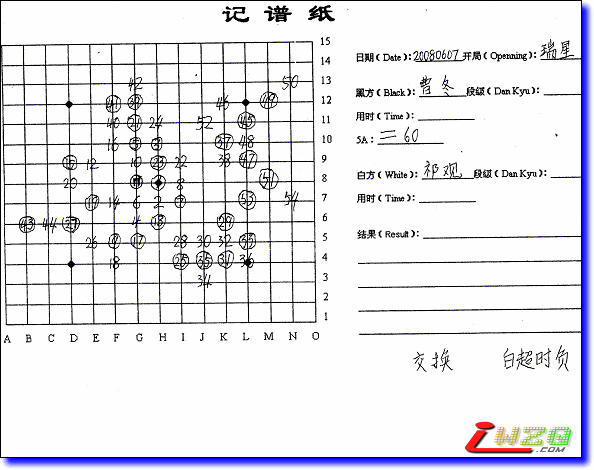

麻烦有志告诉我一下你之前发的妖刀总谱怎么打开．我共有九个不同的打谱器都试过了，没一个开得
麻烦有志告诉我一下你之前发的妖刀总谱怎么打开．我共有九个不同的打谱器都试过了，没一个开得棋谱记录单：

我的录入：
qplist.asp?qpid=2514&menu=4&returnmenu=2
不知是否正确，还是因为交换引起无法判断到底谁是黑了。
［ 有志青年 于 2008-9-1 10:32:53 时奖励此帖[金币加 20 威望加1］
曹东的黑，祁观超时。
［ 有志青年 于 2008-9-1 10:32:56 时奖励此帖[金币加 20 威望加1］
麻烦有志告诉我一下你之前发的妖刀总谱怎么打开．我共有九个不同的打谱器都试过了，没一个开得
谢谢，已经更改，哎，这张棋谱是交换了之后的黑白填写在棋谱纸上，而之前的一些棋谱交换后还写之前的黑白。
怎一个“乱”能解释呀。
哎，最后剩1分钟的曹冬把剩5分钟的牛牛拍死了……